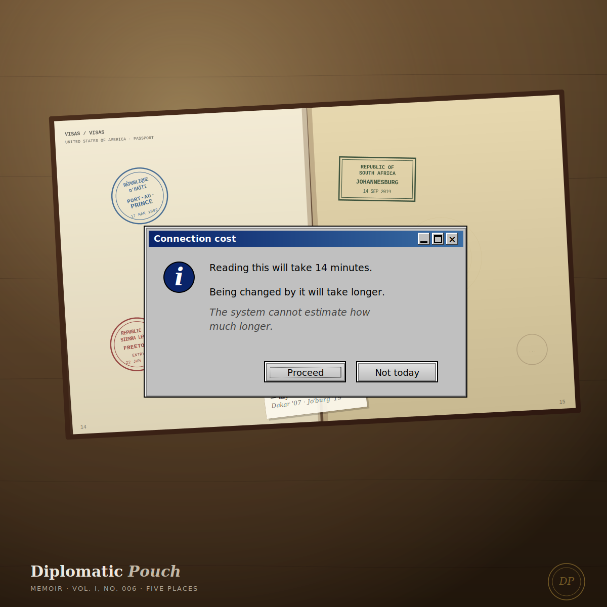

Five Places
What I learned watching my mother work — and what I learned on the trips that were not about her work at all.

Port-au-Prince was the first embassy I remember being inside as a child. It was 2004 or 2005, somewhere in the long months after the coup that removed President Aristide and before the violence settled into the chronic register that has shaped Haitian life ever since. I do not remember the building exactly. I remember the way my mother changed when she crossed the threshold. The same person who had been my mother at the breakfast table became a different person at the embassy gate, in a way I did not have language for. She did not become a stranger. She became a representative.
Watching her cross that threshold, week after week and posting after posting, is the closest thing I have to a formal education in what an architect actually does. The job of an architect is not to design a system. The job of an architect is to hold, in one body, multiple incompatible requirements and to keep their seams from showing. Every embassy my mother worked from was an architecture problem. The funder had requirements. The country team had requirements. The field had requirements. The host government had requirements. The people whose health her programs were nominally for had requirements. Almost none of these requirements aligned. My mother's job was to design programs that held all of them at once.
I did not know I was watching architecture. I thought I was watching my mother do her job. The fact that they were the same thing took me twenty years to see.
I want to write about five places that shaped what I now do. Three of them were postings my mother worked from. Two of them were not — they were trips we took as a family, in registers different from the embassy register, that taught me different things. All five of them are part of how I now read systems. None of them would have been visible to me as instruction at the time. I am writing them down now because the instruction was real, even if it was unannounced.
Haiti, 2004 – 2005
The coup of February 29, 2004 had removed President Aristide. By the time I visited, U.S. Marines and the multinational interim force had been replaced by the United Nations Stabilization Mission in Haiti — MINUSTAH — which would be in the country for the next thirteen years. The interim government of President Boniface Alexandre and Prime Minister Gérard Latortue was in office. Port-au-Prince was technically a city under political authority and operationally a city in the middle of a slow-burn civil emergency that nobody in Washington wanted to call a civil emergency, because calling it that would have required different decisions.
My mother's work in Haiti was in health. The political crisis had not paused the agency's health portfolio; the political crisis had made the health portfolio harder to execute. Her job was to keep public health programs functional in a country where the public order they assumed was visibly degrading and where every clinic visit was potentially a security calculation.
I have specific memories from that visit that I am not going to write into this newsletter, because they are not mine alone to publish — they involve specific people whose stories belong to them. What I can write about is what I learned by watching my mother work in a place where the work was actively dangerous.
The first thing I learned was what a fortified embassy actually looks like. Before Haiti, the embassies I had been inside were buildings. In Port-au-Prince in 2004 – 2005, the embassy was not a building. The embassy was a system: perimeter walls, security checkpoints, restricted-access vehicles, a route protocol for getting from the compound to wherever the work was happening that day. The fortification was not theater. It was operational reality. Foreign Service Officers do not get hazard pay because the embassy is uncomfortable. They get hazard pay because in some postings the building is the only thing standing between the work and the violence.
The second thing I learned was that my mother's threat model now contained variables I had not seen her hold before. The Washington funder still wanted clean health indicators. The Haitian health workers still wanted programs that respected local conditions. And the security situation now added a third variable: which clinics could be safely reached on which days, which staff members were at higher risk, which appointments could be kept and which had to be moved. The architecture of her work now included security architecture. I did not know I was watching threat modeling. I thought I was watching my mother go to work in a place that would not let her go to work normally.
The cybersecurity equivalent is what happens to a security program during a sustained incident. The threat model that worked during normal operations does not work during the incident. Every variable that was stable becomes mobile. The routine wire authorization becomes the wire that may or may not be the CFO's actual instruction. The standard access path becomes the access that may or may not be currently compromised. The work continues, but the work is now layered on top of a security calculation that did not exist in normal time. The CISOs who handle incidents well are the ones who can hold the operational work and the security calculation at the same time without letting either of them collapse into the other. My mother had been doing this for twenty years before I had a vocabulary for what she was doing. Haiti was the first time I saw the layered calculation clearly enough to remember the seeing.
Bangladesh
Dhaka taught me about scale and density in a way I had never encountered before. The USAID Bangladesh mission is one of the largest in the agency's portfolio and has been for decades; the health work alone touches a population larger than Russia. My mother's work there was inside that portfolio.
What I remember about Dhaka, more than any specific scene from any specific day, is the rhythm. The way the city moves is the way a population in the tens of millions moves — not chaotically, but with a layered choreography that an outside observer mistakes for chaos because the observer is not standing in the right position to see the pattern. The same is true of the agency's work in the country. From the outside, the U.S. health investment in Bangladesh looks like a sprawl of programs whose logic is hard to follow. From the inside, the logic is the rhythm. The funder cannot see the rhythm. The local health worker is the rhythm. The Foreign Service Officer in between is the one who has to translate the rhythm into something the funder can absorb without disrupting the rhythm itself.
What Bangladesh taught me was that the operational reality at scale is a different kind of reality than the operational reality at small scale. The same threat models do not apply. A clinic visit in a smaller country posting and a clinic visit in Dhaka are structurally different events because the populations they serve and the systems they sit inside are structurally different. The architect who imagines that the same controls apply at both scales has not been to both scales. My mother had been to both scales. She did not assume the controls were the same. She designed for the rhythm.
Every enterprise security architect I have advised has had a version of this realization. The controls that worked when the organization was two hundred people do not work when the organization is twenty thousand, not because the controls are wrong but because the rhythm of the organization at twenty thousand is a different rhythm. The security program has to adapt to the rhythm of the population it is now serving. Bangladesh was where I first watched what that adaptation looks like at the scale of a country.
Sierra Leone
Sierra Leone was the posting where I understood what stewardship looks like under pressure.
My mother was the USAID Country Coordinator there during the post-Ebola health recovery. Ebola is the kind of crisis that breaks health systems that were not designed to absorb it, and the recovery work is not glamorous — it is the slow rebuilding of trust between communities and health workers, between health workers and the institutions paying them, between the country and the international funders who had arrived in force during the crisis and were starting to leave.
I watched her do this work from a distance, by then, because I was an adult in another country. What I noticed in our calls, and in the visit I made during her posting, was that the work was now almost entirely relational. The technical content was important; the relationships were the actual infrastructure. The Sierra Leoneans she worked with did not trust her because of the U.S. flag on her credentials. They trusted her because she had been doing this work for two decades and had a track record of staying through the parts that were not glamorous.
The technical name for this in international development is "absorption capacity" — the ability of a system to take in resources and convert them into outcomes. The post-Ebola question for Sierra Leone was not whether enough money was coming in. The post-Ebola question was whether the system that had to absorb that money had the relational infrastructure to convert it into outcomes that would still be there in five years. Almost every metric you could look at said the money was being absorbed. Almost every relational observation said the absorption was happening on terms that would not last.
My mother's job, as Country Coordinator, was to be present for the slow relational work that the metrics could not see. She went to meetings that did not produce deliverables. She showed up at ceremonies that did not advance any specific program. She made phone calls that were not on her workplan. The relational infrastructure she was tending was the absorption capacity. Without it, the money came in and disappeared. With it, the money came in and built something that was still standing two years after she left.
The cybersecurity equivalent is incident response. The first incident response framework I ever helped design at a client was rigorous, technically correct, and politically naïve. It did not account for the fact that the relational trust between the security team and the engineering team, between the security team and legal, between the security team and the executives whose careers were attached to the affected systems — that relational trust was the actual incident response infrastructure. Without it, the technical framework was paper. With it, the framework was a guide for what people who already trusted each other were going to do anyway. I rewrote that client's IR plan after the second engagement. The new plan was half the length. Most of what I had cut was specification. What I had added was a section called "Relational Preconditions" that named, by role, the trust relationships that had to be tended before the framework could be activated. I had not invented the section. I had remembered Freetown.
South Africa
South Africa was not a posting. It was a family trip — the kind of trip diplomatic families take when they get the chance to travel together not because of someone's work assignment but because they have decided, for once, to be somewhere as a family rather than as an extension of a posting. I do not remember exactly when we went or precisely why. What I remember is that the trip felt different from every other trip I had taken with my parents.
South Africa in the years after apartheid is a country whose architecture of memory is everywhere. You can read the country's recent history in the buildings, in the neighborhoods, in the way the airport handles arrivals, in the soft formality of the people who work in the tourism economy and have learned which questions to politely deflect. I was old enough to notice. I was not yet old enough to interpret everything I was noticing.
What I now think the trip taught me was that countries carry their threat models in their architecture. South Africa's threat models are visible in a way that most Americans never see in their own country because most Americans have not been taught to read the architecture they live in. The South African approach to gated communities, to private security, to the relationship between residents and domestic workers — all of this is a built environment that says, in advance, what the country has been afraid of and what it has been afraid of losing. The same is true of every country. The South African version is just legible.
The security architecture of a software system is the same kind of artifact. It encodes, in its choices, what the architects were afraid of and what they were afraid of losing. The architect who cannot read those choices is missing half of what the architecture is doing. The trip to South Africa was the first time I saw a country whose architecture I could read enough to know I was reading it. I have been reading architectures ever since.
Nigeria
Nigeria was the visit that I could not write a clean lesson out of. It is my birthplace. My twin sister was born there too. We were taken away before we had words for what taking-away meant. Returning to a place that is, by every document, your home but that you have no living memory of is its own category of travel. It is not nostalgia. It is not homecoming. It is a return to a place that is your origin in a register your body cannot quite confirm.
What I felt in Nigeria, in the trips we made back to visit, was that the country was reading me as much as I was reading it. People could place my surname. They could ask the right follow-up questions. They could tell, by something in the way I held myself, that I was diaspora — born here, raised elsewhere, returning under conditions that the country could not change. The Nigerian family members we visited were generous about all of this. The country itself was honest. Nigeria does not pretend that returning diaspora are the same as those who stayed. It welcomes us. It also notes the difference. I appreciated the honesty.
Authentication is sometimes a question a country gets to answer. Identification is sometimes a question the body gets to answer. The two questions are not always asked in the same room.
The Nigerian passport said I belonged. The body I walked around in said I had been gone. Both things were true. The country had no obligation to resolve them for me.
I have written about that gap in security terms in earlier dispatches — between what a system says about a person and what the person actually is. Nigeria was the original example. The country was patient with the gap. The country was also clear about it. I learned, on those trips, that the work of reconciling who a system says you are with who you actually are is the work of a lifetime. Nigeria does not finish that work for you. Nigeria gives you the room to do it.
The throughline
Five places. Three of them were my mother's postings — Haiti, Bangladesh, Sierra Leone. Two of them were not — South Africa, Nigeria. All five of them taught me something about what it means to do work that the people doing the work understand differently from how the people paying for the work understand it, and about what it means to be a person whose passport, body, and history are not always telling the same story about who they are.
Every security program I have ever worked on is, structurally, the same kind of work my mother was doing across those embassies and the same kind of reading I was learning to do in South Africa and Nigeria. There is a central authority that wants its threat model honored. There is a distributed field where the actual operational realities live. There is a translation problem in both directions, and the quality of the program depends almost entirely on whether the people doing the translation are good at their jobs.
The cybersecurity field has spent twenty years building better tools. The next decade is going to be about getting better at the diplomatic work — at holding two or more threat models simultaneously, at being honest about which metric measures the work and which one measures the appearance of the work, at reading the architecture of the system you are inside well enough to know what the architects were afraid of when they built it. We have not been good at this work as a field. We have hidden behind the technical work because the technical work is measurable and the diplomatic work is not. The diplomatic work is what makes the technical work survive.
I am, in a real sense, a second-generation diplomat. The pouch I carry is digital. The work is the same. The places I have learned to look for the seams are the places my mother taught me to look, twenty years before I had any vocabulary for what I was watching — and the places my body learned to read on its own visits back to where my passport said I was from.
My mother will not read this until I send it to her. She will read it the way she reads everything — once carefully, once again to think about it, then once more to find what I left out. She will tell me, in the way that only she can, what I got right about her and what I got wrong. I will revise nothing on that basis. The memoir is mine. The mother is hers. The lineage is what we are both standing on, in different bodies, in different generations of the same work.
Next dispatch ── Treaty. The threat model you inherit.
— Dr. Safi Mojidi